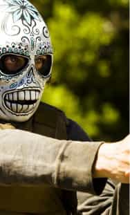
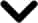

« Grow up, Ben. You can’t change the world, it changes you. »
« Grandis, Ben. Tu ne peux pas changer le monde, c'est lui qui te changera. »
Savages est un film adapté du livre du même nom. Les personnages sont hauts en couleur dans cette adaptation fidèle et les deux protagonistes possèdent des points de vues bien différents sur le monde et la vie en général. Plongeons nous dans cet univers de drogue, de sexe et de différences qui nous rendent complémentaires.
Le film Savages est un thriller centré autour du commerce illégal monté par deux meilleurs amis.
Oliver Stone est un réalisateur, scénariste, producteur et acteur américain.
Ce roman a été publié en 2010. Il est la base de l’adaptation filmique de 2012.
Images issues du film © Savages, 2012